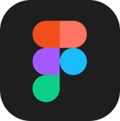
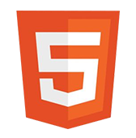
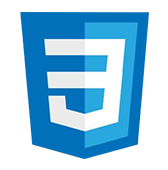
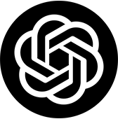
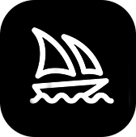
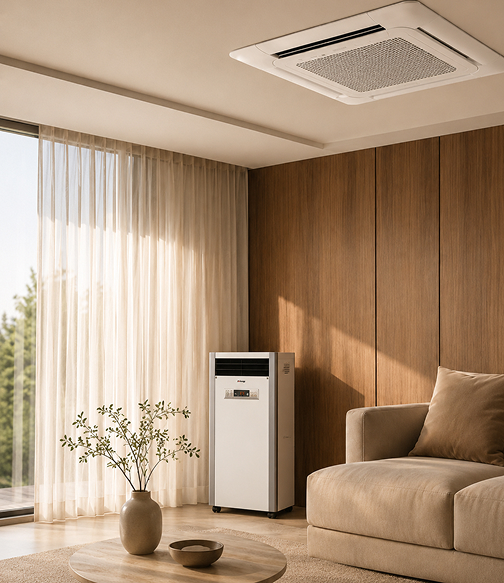

정보 구조 재설계
환기 시스템·온풍기·공기청정기 등 주요 제품군을 목적에 따라 다시 묶어 탐색 단계를 줄였습니다.

B2B Website Renewal · Case Study
복잡한 제품 정보를
신뢰로 바꾸는 기업 홈페이지
천장형 환기 시스템·환풍기·온풍기 등 공조 설비를 다루는 YENE의 홈페이지를 리뉴얼했습니다. 제품을 나열하는 데서 멈추지 않고, 필요한 정보를 쉽게 찾아 상담·견적 문의까지 자연스럽게 이어지는 흐름을 설계했습니다.
프로젝트 보기
전문적인 정보일수록
사용자는 더 쉽게 이해할 수 있어야 합니다.
YENE는 공조 설비를 전문적으로 다루는 기업입니다. 이번 리뉴얼은 복잡했던 정보 구조를 다시 정리하고, 기업의 전문성과 신뢰를 효과적으로 전할 수 있도록 사용자 경험을 새로 짠 팀 프로젝트입니다.

Figma
HTML
CSS
Chatgpt
Claude기존 홈페이지는 다양한 제품 정보를 담고 있었지만, 어떤 제품을 골라야 할지 이해하기 어려웠고 기업의 강점과 신뢰 요소도 충분히 드러나지 않았습니다. 견적 문의까지 이어지는 흐름 역시 명확하지 않았습니다.
특히 일반 고객·대리점·시공업체처럼 방문 목적이 다른 사용자들이 같은 구조 안에서 정보를 찾아야 한다는 점이 가장 큰 과제였습니다.

우리가 마주한 네 가지 문제
다양한 제품군이 나열돼 있어, 원하는 정보를 찾기까지 탐색 과정이 길었습니다.
인증 현황·시공 경험·서비스 강점 등 구매 결정에 필요한 정보가 흩어져 있었습니다.
상담·견적 문의로 이어지는 CTA가 명확하지 않았습니다.
방문 목적이 다른 사용자별로 정보 우선순위가 정리되지 않았습니다.
환기 시스템·온풍기·공기청정기 등 주요 제품군을 목적에 따라 다시 묶어 탐색 단계를 줄였습니다.
기업 소개·인증 현황·서비스 강점·대리점 정보를 주요 콘텐츠로 끌어올려 전문성을 드러냈습니다.
견적 문의·상담 버튼을 주요 동선에 배치해 문의 접근성을 높였습니다.
기술적인 내용을 이미지와 아이콘 중심으로 풀어내 이해도를 높였습니다.


팀원들과 협업하며 사용자 관점에서 문제를 정의하고 개선 방향을 제안하는 역할을 맡았습니다. 디자인 작업과 함께 팀 안에서 방향성을 조율하는 일에도 참여했습니다.

기업 홈페이지는 단순한 회사 소개가 아니라, 사용자의 신뢰를 만들고 다음 행동을 이끄는 중요한 접점이라는 걸 경험했습니다.
다양한 이해관계자가 참여하는 환경에서는 디자인 역량만큼 소통과 조율 능력이 중요하다는 걸 배웠습니다. 또 B2B 서비스는 화려한 인터랙션보다, 사용자가 원하는 정보를 빠르게 찾고 신뢰할 수 있도록 설계하는 것이 핵심이라는 점을 체감했습니다.
“좋은 기업 경험은 복잡한 정보를 단순하게 전달하고,
사용자가 다음 행동을 확신하도록 돕는 데서 시작된다.”
복잡한 B2B 정보를 사용자 중심의 경험으로 재구성하고, 팀 협업을 통해 신뢰 기반의 기업 홈페이지를 설계한 프로젝트.